In this post, we will discuss the real actual mechanism in creating a slide into another world-line. It’s not enough to obtain coordinates and set up a magnetic field, you need to be able to imprint those coordinates on the traveler and make the transition happen. Here, we discuss how it works, and how this dimensional portal works to take a person from one world-line to another.
A quick important note
It is relatively easy to find articles about quantum teleportation on the internet.
These articles discuss a “recently” developed association of quantum physics that allow the entanglement of widely separately spaced particles to be attached to each other. Those involved in the work repeatedly say that scaling up this principle to that where you can teleport a human would take centuries.
This series of articles that I am posting is similar to but quite different from the “quantum teleportation” experiments.
So whatever you read about on the internet, do not associate it with this series of posts. While the procedures and systems described herein does involve entanglement at a quantum level, it relies on an entirely different set of processes to accomplish these world-line slides.
So, let’s make one thing absolutely clear; the methods discussed within this series has very little to do with the quantum teleportation methods that you can discover on the internet. So you can ignore these other articles as they have zero bearing on this series of posts.
- Is Teleportation Actually Possible?
- Beam me Up: Quantum Teleportation is Possible?
- How to build a teleportation machine: Teleportation protocol
The big summary overview
This post has some real valuable nuggets of information. Unfortunately, the information associated with those packets of information might be too overwhelming.
While the mechanism details are very interesting, but really need to be parsed out so that you all can fully understand what is going on. So here is the super-simplistic overview…
- In short, when the human traveler enters the portal, he/she enters a magnetic field.
- This field creates a neutral environment, it supersedes the natural environment.
- Then, as the magnetic field collapses, the coordinate frequencies are changed from that of the egress portal to the destination coordinates.
- And the person thus is instantly entangled with the new coordinates.
- Thus, using the Alan Holt’s frequency resonance system, the person is instantly teleported to the new location.
This happens because it is the nature of the universe that everything interacts intimately with it’s surroundings.
We automatically become entangled with the things around us. Physically and through our thoughts. These entanglements can be very strong.
Saying it is a slightly different way…
When you enter into a magnetic field (of the proper configuration) you are isolated from the surrounding influences. You become an individual within a ‘container”. This container is where the human traveler changes his physical world-line entanglements.
- When entering the magnetic field, the entanglements associated with the egress location are turned off (if not momentarily erased).
So now, that traveler is alone and detached from everything. He/she has no entanglements with anything outside of that magnetic field. That is all entanglements; Physical, and non-physical.
So what we can do is trick the human body of the traveler to have entanglements with a new set of coordinates. These can be a geographic location, a point in time, or a completely different world-line.
- The dimensional portal provides a new set of coordinates.
The moment that the person is in the magnetic field, his/her old coordinates are nullified and for a spit second, he/she is without any outside entanglements. Then a set of destination coordinates (which are frequencies, from the other posts) are presented immediately.
- The human then becomes entangled with the new set of coordinates within the field.
When the magnetic field is immediately turned off, he/she immediately teleports to the new set of coordinates.
And, ladies and gentlemen, this is how the (teleportation) dimensional portal works.
How can this be accomplished?
This is accomplished is through the use of the Alan Holt frequency resonance method, where everything in this universe is associated with entanglements.
- Like entanglements attract.
- Dissimilar entanglements repel.
And that is, after all, the Alan Holt resonance frequency system in a “nutshell”.
Now the quantum physics involved in this is pretty much established, but there is a great deal of parsing on all the fine details involved…
Einstein's equation has a metric solution, from which the geodesics can be calculated, giving the trajectories followed by particles. RHS, the stress-energy tensor Tµν. When the field is created by ordinary matter and the particle velocities are weak with respect to the speed of light, this tensor contains only one term, proportional to the density of matter ρ. Geodesics can be calculated around a spherical mass of constant density. This gives two connected sets of geodesics (lying within this mass, and outside). The result is that a positive mass generates geodesics that express the classical gravitational attraction and that a negative mass (ρ changed to -ρ) on the contrary evokes gravitational repulsion. Anglo-Austrian physicist Hermann Bondi showed in 1957 in that, since both positive and negative masses would follow the same geodesics (as there is one metric tensor gµν in the Einstein field equations): • Positive mass attracts anything. • Negative mass repels anything. The creation of the new entanglements is through the association of the frequencies (destination coordinates) at the portal. -Negative Energy States and Interstellar Travel
The arguments are interesting, but I don’t want the reader to get too bogged down on a side topic.
In the figure below, the positive mass, repelled by the antigravitational potential of the negative mass, runs away from it, while the negative mass falls into the gravity well of the positive mass and chases it. The couple is then uniformly accelerated, but the total energy stays constant because the kinetic energy associated with the negative mass is negative.
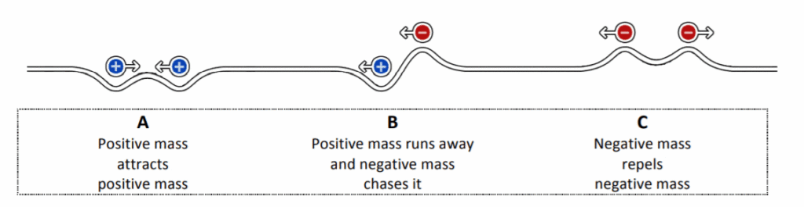
Such interaction between particles with opposite masses violates the action-reaction principle.
Note that this is based on the fact that test particles with a positive or a negative passive gravitational mass would behave the same way when they are embedded in a gravitational potential created by a large positive mass M.
This has precluded any consideration of negative mass in astrophysics and cosmology for 60 years.
Two coupled field equations: the Janus cosmological model
If we want to consider something that works, we need two metrics gµν(+) and gµν
(−) from which two different families of geodesics are calculated, referring to positive mass particles and negative mass particles, respectively. From these metrics, we calculate Ricci tensors Rµν(+) and Rµν(−) as well as Ricci scalars R(+) and R(−).
This is the core of the Janus cosmological model, which describes the universe as a
Riemannian manifold associated to two coupled metrics, populated by positive and negative mass species.
These solutions come from a system of two coupled field equations, built from a Lagrangian derivation;
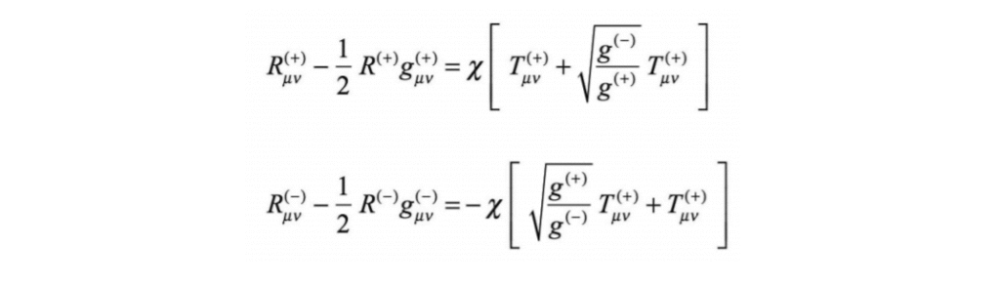
General relativity reduces to Newtonian gravity in the limit of weak gravitational potential and low velocities with respect to the speed of light, so that Newton’s law of universal gravitation can be found from the Newtonian approximation of the Einstein field equations.
Likewise, our system of two coupled field equations provides the following interaction laws (proportional to 1/r2):
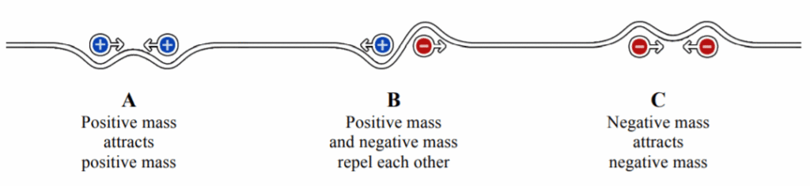
To sum up:
• Positive masses mutually attract.
• Positive mass and negative mass mutually repel.
• Negative masses mutually attract.
Which is, in effect, not only the natural laws of our universe, but also the Alan Holt resonance frequency method of physical transport.
The problem…
But, there is a problem.
You see, the primary problem is that everything is entangled with the environmental sphere that surrounds us. This is quantum physics, in case you are not paying attention. Not “new agey” “mumbo jumbo”.
When a person enters the magnetic field there are two sets of isolated frequencies involved.
They are…
- Frequencies associated with the human gravity mass as he/she enters the portal.
- Frequencies associated with the portal itself (and the surroundings).
What we need to do is to change the “frequencies of location” associated with the dimensional portal. But not change the frequencies associated with the person. The two events must absolutely be kept separate.
This is a problem.
How do you do it?
What we need to do is somehow change the egress frequencies to be the destination frequencies inside the portal. We need to superimpose the destination “frequencies of location” over on top of the egress portal “frequencies of location”.
And all the time, NOT permitting any changes to the traveler.
Suppressing the gravity frequencies of the traveler inside the magnetic field would completely erase that person from the universe! Yikes!
Then, when the human enters the magnetic field, his/her frequencies of location become entangled with whatever the destination coordinates are at the dimensional portal. And being so entangled, when the (magnetic) field is turned off, the traveler is instantly teleported to the new destination coordinates.
This is how it is done…
How to superimpose destination frequencies of location on the egress portal.
Here is how we suppress the egress portal frequencies (coordinates)…
[1] Nullify the egress coordinates
The problem evolves into swapping out the existing egress coordinates with a set of new coordinates in the portal.
And the way that we will do this is…
- Nullify the existing egress coordinates / frequencies.
- Superimpose the destination coordinates / frequencies in it’s place.
- All the time, absolutely not interfering with the gravitational frequencies of the traveler.
The big hurtle is to nullify the existing egress coordinates.
This, is, believe it or not, a common problem in radio, and television. How do you stop one signal from interfering with another one?
The technique is simple, really.
You generate a “noise cancelling” signal. It is the completely opposite of the signal that you want to cancel out, and thus 1-1=0. For every high, you subject it to a low. For every low, you subject it to a high.
Techniques have been developed that are highly efficient in doing this. All noise canceling headphones use this technology.
In our use, we will consider the egress portal’s gravitation frequency profile to be “noise”. We will want to cancel it out, and make it “null”. There are numerous ways to do this. In our example we will use a digital signal processor to accomplish this task.
Feedforward ANC is, arguably the simplest type of active noise cancellation. It uses a digital signal processor (DSP) or other dedicated ANC processing hardware to map the noise signal.
And this is how it’s done with our egress dimensional portal…
[2] Use Digital Signal Processing
What follows is nothing "new". This is what Electrical Signal Engineers work with on a daily basis. This subject is perhaps jsut as confusing to people who do not use the technology day-in and day-out. Do not get discouraged if you do not understand it. Just keep in mind that this is the exact process that you will use to suppress and control the egress portal frequency coordinates. It's now, right here, for your future use.
What we will do is take the frequencies and signals calculated, computed for the egress dimensional portal and perform “digital data acquisition”. Which pretty much means that we will take the recorded analog signal recorded and convert it to a digital signal.
During digital data acquisition, the transducers which output the analog signals (of the associated gravity of the egress portal) is then digitized for use with a computer.
The reason for this is that a computer cannot store continuous analog time waveforms. Which is pretty much what the transducers produce. So instead it breaks the signal into discrete ‘pieces’ or ‘samples’ to store them.
Data is recorded in the time domain, but often it is desired to perform a Fourier transform to view the data in the frequency domain.
The Fourier Transform is a tool that breaks a waveform (a function or signal) into an alternate representation, characterized by sine and cosines. The Fourier Transform shows that any waveform can be re-written as the sum of sinusoidal functions.
There are unique terms used when performing a Fourier transform on this digitized data, which are not always used in the analog case.
They are listed in Figure 1 below:
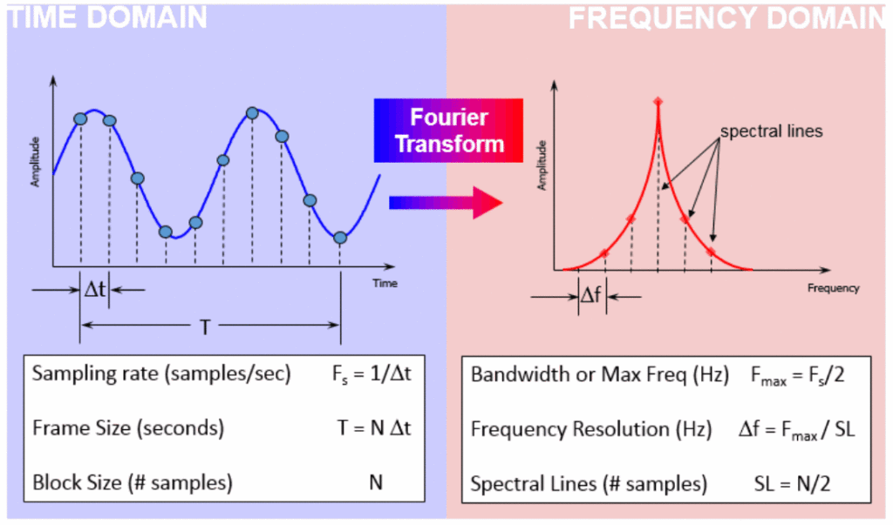
Whether viewing digital data in the time domain or in the frequency domain, understanding the relationship between these different terms affects the quality of the final analysis. Some key Digital Signal Processing (DSP) terms are:
Time Domain Terms
- Sampling Rate (Fs) – Number of data samples acquired per second
- Frame Size (T) – Amount of time data collected to perform a Fourier transform
- Block Size (N) – Total number of data samples acquired during one frame
Frequency Domain Terms
- Bandwidth (Fmax) – Highest frequency that is captured in the Fourier transform, equal to half the sampling rate
- Spectral Lines (SL)– After Fourier transform, total number of frequency domain samples
- Frequency Resolution (Δf) – Spacing between samples in the frequency domain
Sampling Rate (Fs)
Sampling rate (sometimes called sampling frequency or Fs) is the number of data points acquired per second.
A sampling rate of 2000 samples/second means that 2000 discrete data points are acquired every second. This can be referred to as 2000 Hertz sample frequency.
The sampling rate is important for determining the maximum amplitude and correct waveform of the signal as shown in Figure 2.
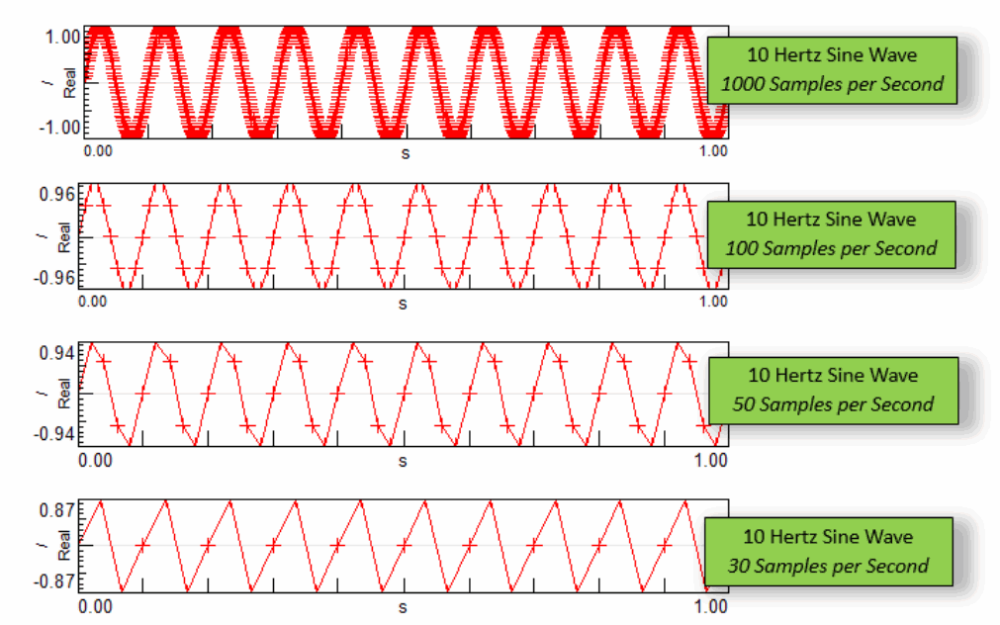
To get close to the correct peak amplitude in the time domain, it is important to sample at least 10 times faster than the highest frequency of interest. For a 100 Hertz sine wave, the minimum sampling rate would be 1000 samples per second. In practice, sampling even higher than 10x helps measure the amplitude correctly in the time domain.
It should be noted that obtaining the correct amplitude in the frequency domain only requires sampling twice the highest frequency of interest. In practice, the anti-aliasing filter in most data acquisition systems makes the requirement 2.5 times the frequency of interest. The Bandwidth section contains more information about the anti-aliasing filter.
The inverse of sampling frequency (Fs) is the sampling interval or Δt. It is the amount of time between data samples collected in the time domain as shown in Figure 3.
The smaller the quantity Δt, the better the chance of measuring the true peak in the time domain.
Block Size (N)
The block size (N) is the total number of time data points that are captured to perform a Fourier transform. A block size of 2000 means that two thousand data points are acquired, then a Fourier transform is performed.
Frame Size (T)
The frame size is the total time (T) to acquire one block of data. The frame size is the block size divided by sample frequency as shown in Figure 4.
For example, with a block size of 2000 data points and a sampling rate of 1000 samples per second, the total time to acquire a single data block is 2 seconds. It takes two seconds to collect 2000 data points.
The total time frame size is also equal to the block size times the time resolution (Figure 5).
When performing averages on multiple blocks of data, the term total amount of time might be used in different ways (Figure 6) and should not be confused:
- Total Time to Acquire One Block – The frame size (T) is the time to acquire one data block, for example, this could be two seconds
- Total Time to Average – If five blocks of data (two seconds each) are to be averaged, the total time to acquire all five blocks (with no overlap) would be 10 seconds
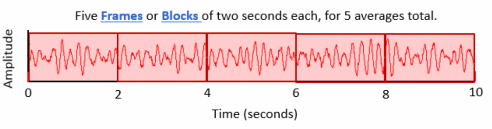
The ‘Throughput Processing knowledge base article’ further explains the interaction between frames and averages.
Bandwidth (Fmax)
The bandwidth (Fmax) is the maximum frequency that can be analyzed. The bandwidth is half of the sampling frequency (Figure 7). The Nyquist sampling criterion requires setting the sampling rate at least twice the maximum frequency of interest.
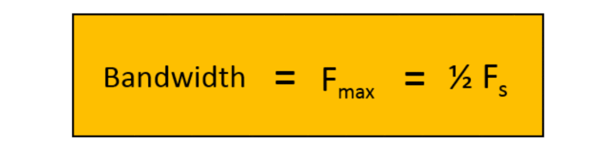
A bandwidth of 1000 Hertz means that the sampling frequency is set to 2000 samples/second.
In fact, even with a sampling rate of 2000 Hz, the actual usable bandwidth can be less than the theoretical limit of 1000 Hertz. This is because in many data acquisition systems, there is an anti-aliasing filter which starts reducing the amplitude of the signal starting at 80% of the bandwidth.
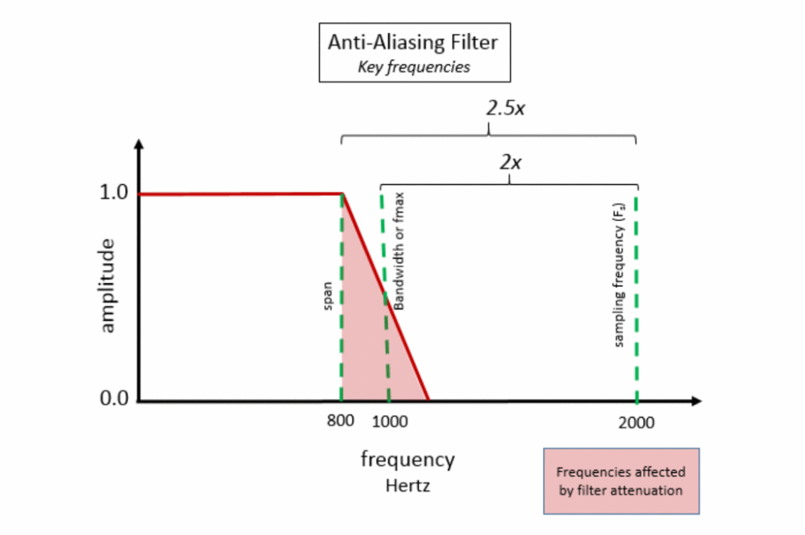
For a bandwidth of 1000 Hertz, the anti-aliasing filter reduces the bandwidth to 800 Hertz and below. The filter attenuates frequencies above 800 Hertz in this case.
In Simcenter Testlab, under ‘Tools -> Options -> General’, it is possible to view only the usable bandwidth by switching to ‘Span’ under ‘Frequency’ as shown in Figure 9.
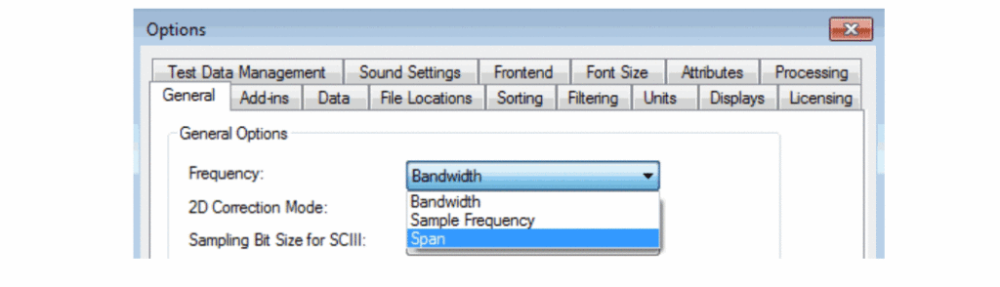
‘Span’ represents the actual useable bandwidth, and the switching to the ‘Span’ setting makes all the Simcenter Testlab displays show only 80% of the bandwidth.
Spectral Lines (SL)
After performing a Fourier transform, the spectral lines (SL) are the total number of frequency domain data points. This is analogous to N, the number of data points in the time domain. There are two data ‘values’ at each spectral line – an amplitude and a phase value as shown in Figure 10.
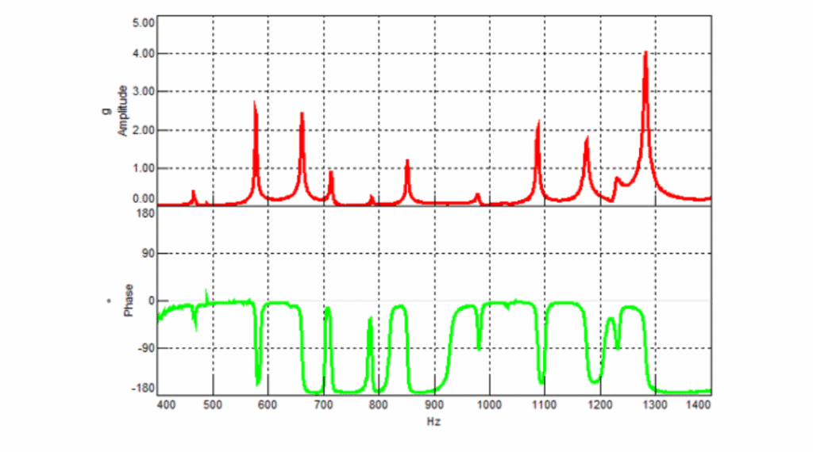
Note that while the Fourier Transform results in amplitude and phase, sometimes the frequency spectrum is converted to an autopower, which eliminates the phase.
The number of spectral lines is half the block size (Figure 11).
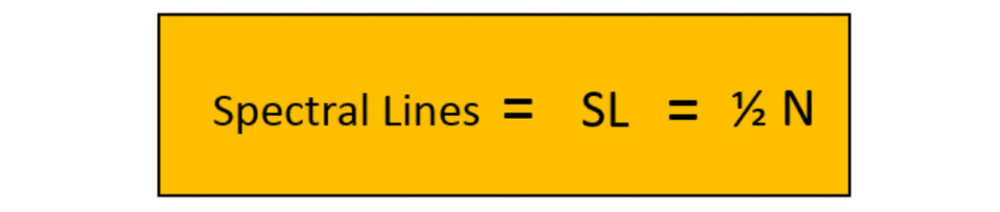
For a block size of 2000 data points, there are 1000 spectral lines.
Frequency Resolution
The frequency resolution (Δf) is the spacing between data points in frequency. The frequency resolution equals the bandwidth divided by the spectral lines as shown in Figure 12.
For example, a bandwidth of 16 Hertz with eight spectral lines, has a frequency resolution of 2.0 Hertz (Figure 13).
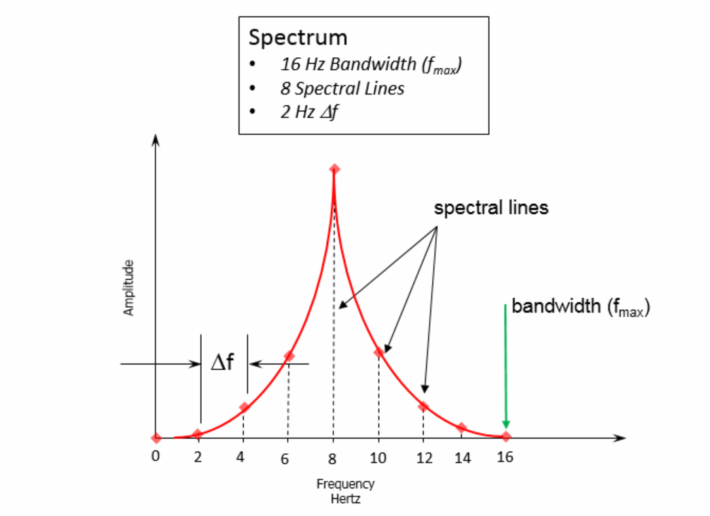
The eight frequency domain spectral lines are spread evenly between 0 and 16 Hertz, which results in the 2.0 Hertz spacing on the frequency axis. Note that 0 Hertz is not included in the spectral line total. The calculated value at zero Hertz represents a constant amplitude DC offset. For example, if a 1 Volt sine wave alternated around a 5 Volt offset, the offset value would be placed at zero Hertz, while the sine wave’s 1 Volt amplitude would be placed at the spectral line corresponding to the sine wave’s frequency.
Digital Signal Processing Relationships
Putting the above relationships together, the different digital signal processing parameters can be related to each other (Figure 14).
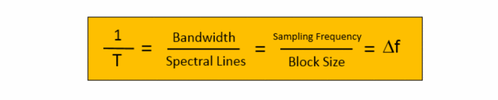
This can be boiled down to one ‘golden equation’ of digital signal processing (Figure 15) which related frame size (T) and frequency resolution (Δf):
This means that:
- The finer the desired frequency resolution, the longer the acquisition time
- The shorter the acquisition time, or frame size, the coarser the frequency resolution
The frequency resolution is important to accurately understand the signal being analyzed. In Figure 16, two sine tones (100 Hertz and 101 Hertz) have been digitized, and a Fourier Transform performed. This was done with two different frequency resolutions: 1.0 Hertz and 0.5 Hertz.
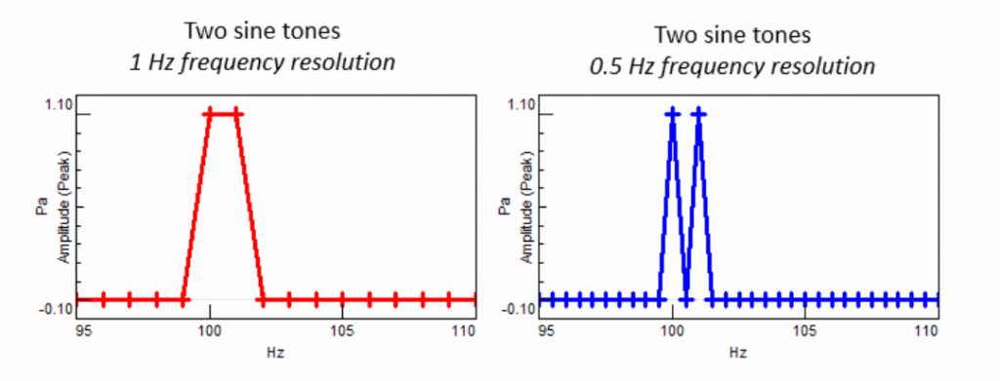
With the finer frequency resolution of 0.5 Hertz, rather than 1.0 Hertz, the spectrum shows two separate and distinct peaks. The benefit of a finer frequency resolution is very obvious. This might beg the question, why not use the finest frequency resolution possible in all cases?
There is a tradeoff. Per the ‘golden equation’ the amount of time data per frame is higher as the frequency resolution is made finer (Figure 13). This can cause requirements for long time data acquisition:
- 10 Hz frequency resolution is desired, only 0.1 seconds of data is required
- 1 Hertz frequency resolution requires 1 second of data
- 0.1 Hertz frequency resolution requires 10 seconds of data
- 0.01 Hertz frequency resolution requires 100 seconds of data!
In some situations, these long time acquisition requirements are not practical. For example, a sports car may go from idle to full speed in just 4 seconds, making a 100 second acquisition, and the corresponding 0.01 frequency resolution, impossible.
Rather than using the sine formulation of the Fourier Transform, a wavelet formulation can be used instead. This can address some of the time-frequency tradeoffs. See the knowledge base article Time-Frequency Analysis: Wavelets.
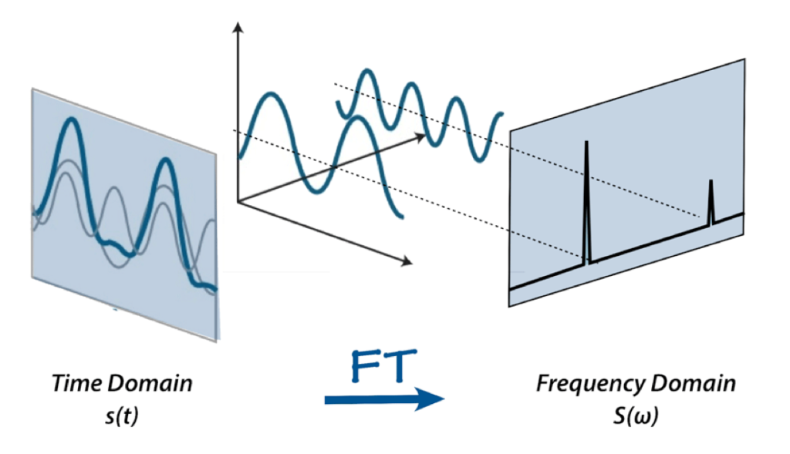
Simcenter Testlab Settings
In Simcenter Testlab (formerly LMS Test.Lab), depending on the software module, only some of these parameters may be settable by the user. However, the digital signal processing relationships are still in effect. For example, when setting the bandwidth to 1024 Hz and spectral lines to 2048 as shown in Figure 17, several other parameters are automatically set.
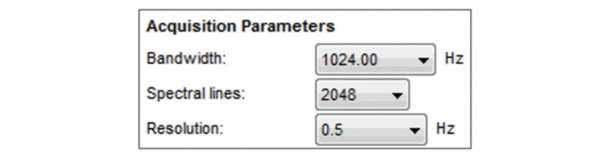
For these settings, the frame size is 2 seconds (inverse of frequency resolution). The sampling frequency is 2048 samples per second, or 2048 Hertz.
Note: Why are the sampling rates and block sizes all powers of two? In the digital world, the Fast Fourier Transform (FFT) and the Discrete Fourier Transform (DFT) are computer algorithms used to perform a Fourier Transform. The Fast Fourier Transform requires a block size that is a power of two (1024, 2048, 4096, etc.) and is computationally quicker than the DFT, which can use any number of data points. With today’s modern computers, the differences in speed are not as noticeable in the past. But due to historical reasons many data acquisition systems still use power of two numbers.
Hopefully this information will be a useful reference for performing digital data acquisition of the egress portal gravity frequency wave profile. Some of the key points discussed: Sampling frequency (Fs) must be set properly to capture the correct amplitude:
- High as possible to capture peak amplitude in time domain. Should be set no lower than 10x the highest frequency of interest.
- At least two times higher than the highest frequency of interest for the frequency domain. This would be at least 2.5x higher if accounting for an anti-aliasing filter.
- There is an inverse relationship (the ‘golden equation’) relating frequency resolution (Δf) and frame size time (T)
Once the egrss portal frequencies (coordinates) are suppressed, we then need to overlap the destination coordinates on top of it.
[3] Overlaying the destination frequency over the suppressed egress.
Nothing new here. It’s standard “boiler plate” frequency manipulation.
There are numerous techniques involved. But, the one that I am most familiar with is known as “single-sideband modulation” (SSB).
In radio communications, single-sideband modulation (SSB) or single-sideband suppressed-carrier modulation (SSB-SC) is a type of modulation used to transmit information, such as an audio signal, by radio waves. A refinement of amplitude modulation, it uses transmitter power and bandwidth more efficiently. Amplitude modulation produces an output signal the bandwidth of which is twice the maximum frequency of the original baseband signal. Single-sideband modulation avoids this bandwidth increase, and the power wasted on a carrier, at the cost of increased device complexity and more difficult tuning at the receiver. -Wikipedia
It need not be too complicated. Remember that an AM signal
has the Fourier transform
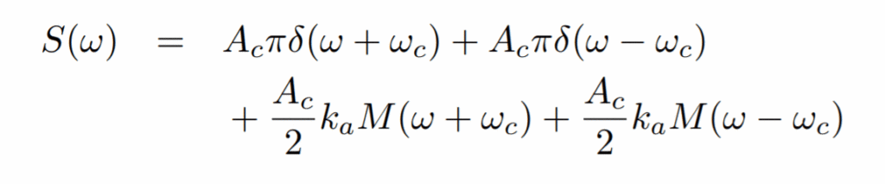
The spectral components in the AM signal equal distances above and below the carrier frequency contain identical information because they are complex conjugates of each other.
The portion above the carrier frequency is called the upper sideband and the portion
below the lower sideband.
In single-sideband (SSB) modulation only the upper sideband or the lower sideband is transmitted. Thus, SSB modulation requires half the bandwidth of AM or DSBSC-AM modulation.
We will assume that the baseband message signal m(t) is band limited with a cutoff
frequency W which is less than the carrier frequency ωc. Then the required channel
bandwidth for an SSB signal is W.
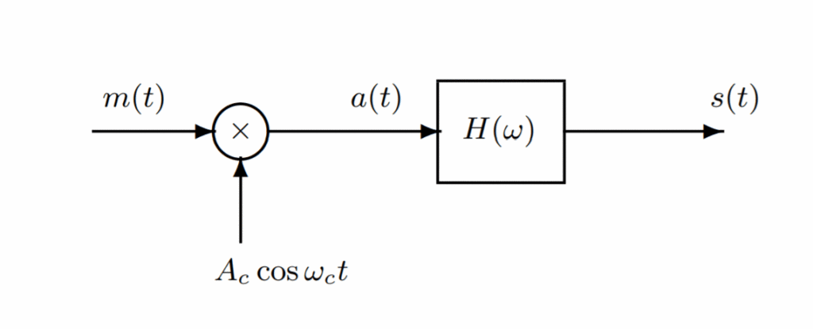
First the DSBSC-AM signal
is formed which has the transform
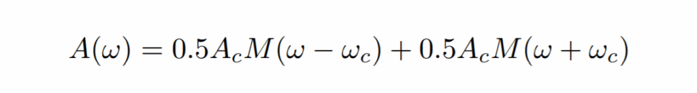
and is centered at the carrier frequency ωc. Then H(ω) selects the desired sideband.
Upper sideband modulation uses the highpass filter
and the lower sideband SSB modulation uses the lowpass filter
Representing SSB Signals in Terms of Hilbert Transforms
Let the baseband message be m(t) and its Hilbert transform ˆm(t). The pre-envelope of the SSB signal has the transform
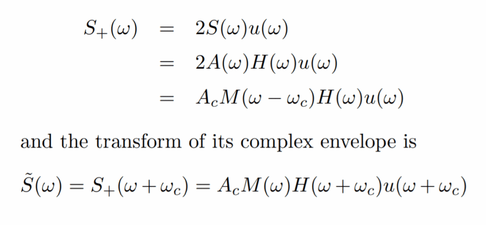
Upper Sideband Case
Substituting Hu(ω) for H(ω) gives
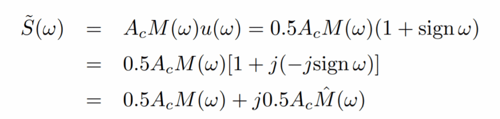
The complex envelope is
Therefore, the SSB signal can be expressed as
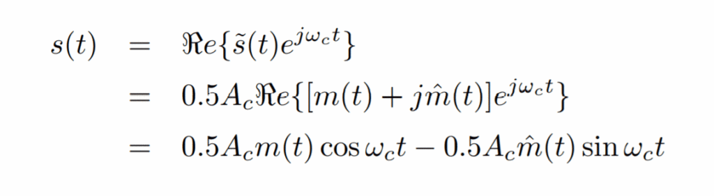
Lower Sideband Case
The transform of the complex envelope is
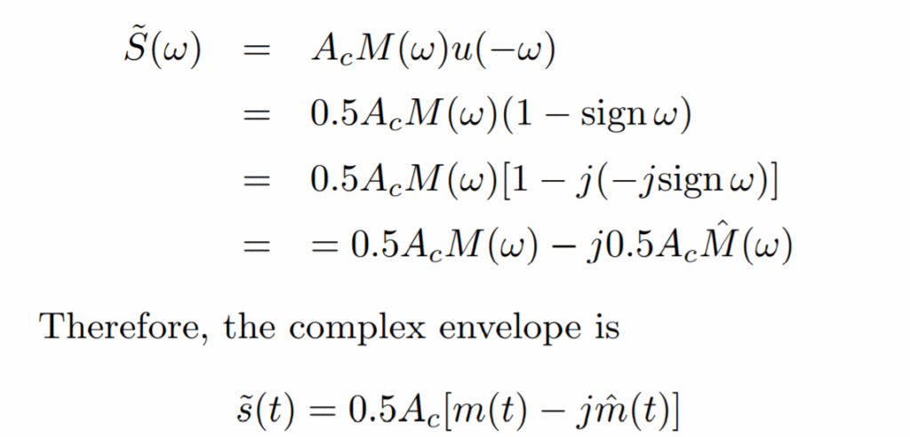
The corresponding SSB signal is
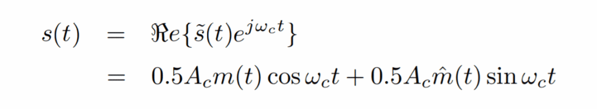
Single-Sideband Modulator Using a Hilbert Transform
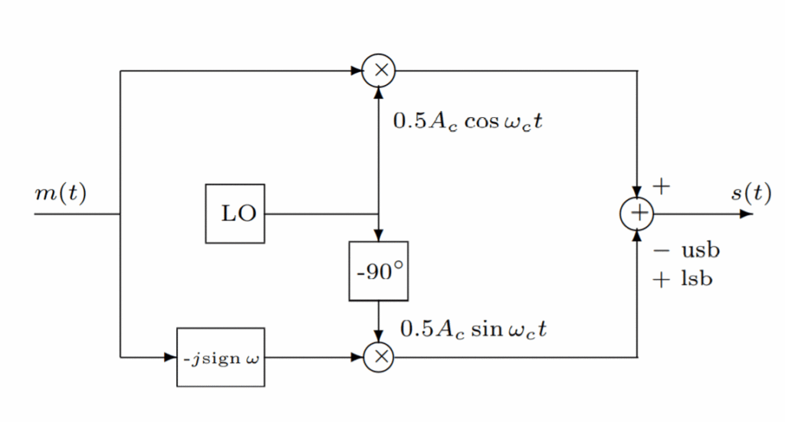
Another Approach to the SSB Signal Representation
Let the baseband message have transform M(ω). An example is shown in Figure 3. Its pre-envelope is
which has the transform
The upper-sideband SSB signal pre-envelope is
which has the transform
The transmitted SSB signal is
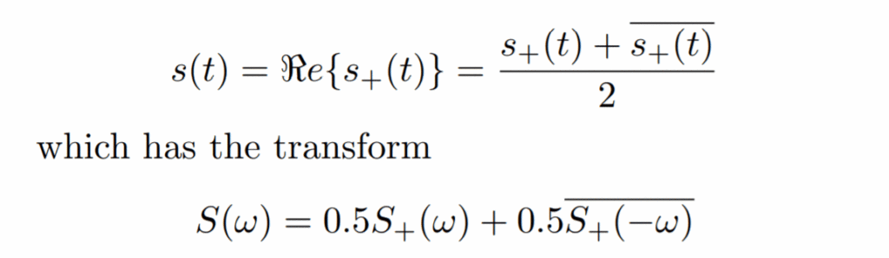
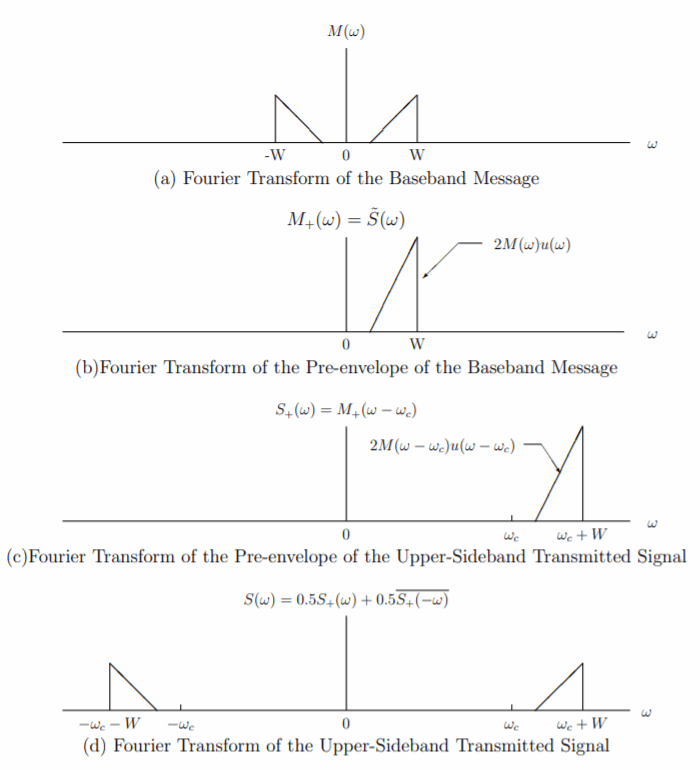
Generating an Upper-Sideband
Coherent Demodulation of SSB Signals
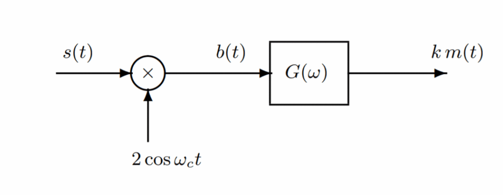
First the received signal is multiplied by a locally generated replica of the carrier signal. Multiplying the formulas for upper and lower sideband SSB signals by 2 cos ωct yields
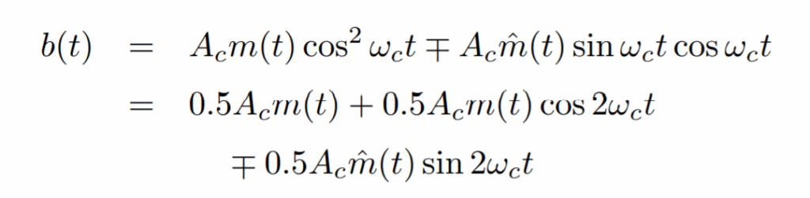
Observe that
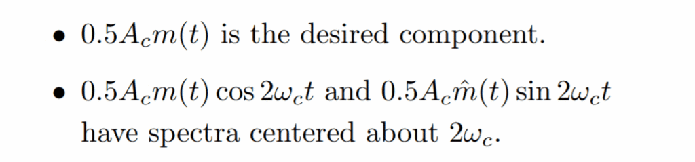
The components around 2ωc are removed by the lowpass filter G(ω) with cutoff frequency W.
In practice, the demodulator shown above should be preceded by a receive bandpass filter that passes s(t) and eliminates out-of-band noise.
Frequency Domain Analysis of Operation
Remember that b(t) = s(t)2 cos ωct. So
This translates the sidebands around ±ωc down to baseband and forms M(ω) which is the desired term and also translates them up to ±2ωc which are the terms removed by the lowpass filter.
SSB Demodulator Using a Hilbert Transform
First, take the Hilbert transform of s(t) and form the pre-envelope
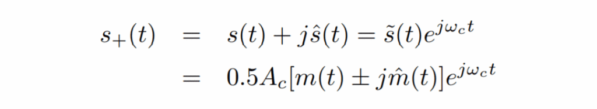
where the plus sign is for upper sideband and the minus sign is for lower sideband modulation
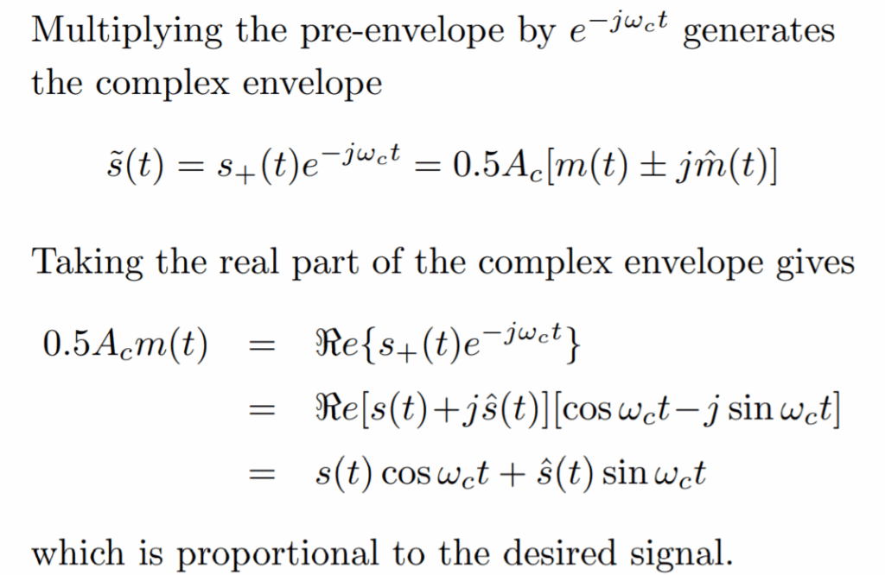
This demodulator requires taking a Hilbert transform but does not require filtering out terms at twice the carrier frequency.
The modulator shown is also a block diagram for a demodulator that implements the formula at the bottom of the previous slide if the input m(t) is replaced by the received signal s(t), the cosine and sine amplitudes are set to 1, and the plus sign is chosen at the output adder.
In practice, the demodulator would be preceded by a bandpass filter that passes the
signal components and rejects out-of-band noise.
Need for a Pilot Tone
These two demodulators assume that the receiver has perfect knowledge of the received carrier frequency and phase. Unfortunately, this information cannot be derived by a system like the Costas loop because the SSB signal is the sum of an inphase component m(t) cos ωct and a quadrature component ˆm(t) sin ωct.
A standard approach to solving this problem is to add a small sinusoidal component called a pilot tone whose frequency is not in the SSB signal band and has a known relationship to the carrier frequency. The pilot tone frequency is often chosen to be the carrier frequency when the baseband message signal has no DC components.
The receiver can then generate a local carrier reference by using a narrow bandwidth bandpass filter to select the pilot tone and possibly following this filter by a phase-locked loop.
Reasons for needing frequency translation:
- To place the signal spectrum in an allocated channel.
- Several messages can be multiplexed together by shifting them to non-overlapping adjacent spectral bands and transmitting the sum of the resulting signals. This is called frequency division multiplexing (FDM).
- To correct for carrier frequency offsets caused by oscillator inaccuracies or Doppler shifts.
Let s(t) be a bandpass signal with the frequency ω0 somewhere in its passband. The
problem is to translate the spectrum so that ω0 is moved to ω1 = ω0 + ∆ω.
The first step is to form the pre-envelope
The corresponding Fourier transform is
The next step is to multiply by a complex exponential with frequency ∆ω to get
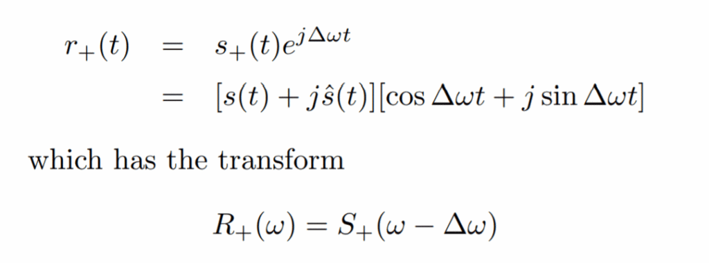
This translates the original spectrum to the right by ∆ω and moves the value at ω0 to the frequency ω1 = ω0 + ∆ω.
Taking the real part of r+(t) gives the following formula for the translated signal:
The real part of r+(t) can also be expressed as
so its Fourier transform is
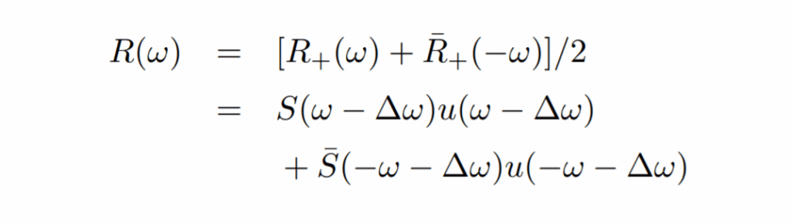
Notice that the formula for computing r(t) from s(t) and ˆs(t) above can be used even when the passband of the translated signal overlaps that of the original signal.
To do this using real signals would require a double conversion process where the signal is
- first shifted to a non-overlapping band by multiplying by cos ω3t,
- one sideband of this modulated signal is selected with a highpass filter,
- and then another modulation is performed with the appropriate carrier frequency and the signal in the desired band is selected with a filter.
This is generally not as convenient for DSP applications.
Now, after this process has been completed, we now have the destination coordinate frequencies overlaid upon the egress coordinates. To the traveler, and to the portal it is residing within a space outside of time and space within the magnetic field, and upon the collapse of the field, the destination coordinates would automatically be imprinted upon the traveler within the magnetic field.
But…
Unless you “connect” the traveler’s gravitational frequency with the new destination coordinates, nothing will happen. The field would just collapse and the traveler would reconnect with the egress portal coordinates instead…
How to solve this problem?
[4] Adding the gravitational frequency profile of the traveler to the mix.
It’s surprisingly easy.
…in theory.
You hold on to the destination coordinates longer than the egress coordinates. Or, in other words, continue with the suppression of the egress coordinates while the magnetic field collapses.
In truth, there is a gradual change from the suppression of the egress coordinates to a null state, and a gradual change from the null state to the destination coordinates. This description is apt, but the “gradual” change happens very rapidly.
Conclusion
This post describes the “nuts and bolts” behind the control that ejects the human traveler from the egress portal to the destination coordinates.
- In short, when the human traveler enters the portal, he/she enters a magnetic field.
- This field creates a neutral environment, it supersedes the natural environment.
- Then, as the magnetic field collapses, the coordinate frequencies are changed from that of the egress portal to the destination coordinates.
- And the person thus is instantly entangled with the new coordinates.
- Thus, using the Alan Holt’s frequency resonance system, the person is instantly teleported to the new location.
As you can see, essentially the mechanism is basically frequency control, modulation and pulsing of the environment around a very intense magnetic field containing a human traveler.
And that is it.
Of course there are other issues involved. Like the actual electrical controls, the creation of the magnetic field, and how the traveler enters the field (he has to be prepared and ready), not to mention the actual mapping of the destination coordinates.
In the next post we will talk about making the magnetic field. Exciting stuff this, eh?